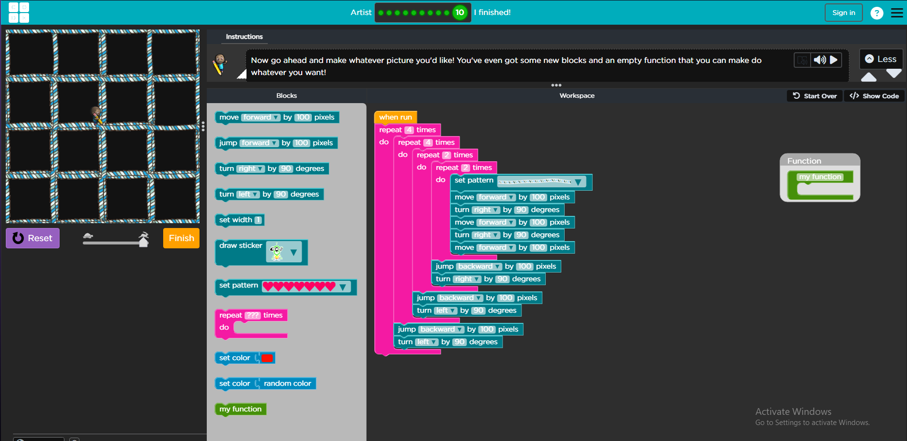

During this week we made short responses and TED talk. We also made an art piece with code in the artist lab tutorial
Last Lecture Response
My thoughts on the last lecture were interesting. The concept of a ‘last lecture’ was a unique term and an interesting concept to apply to his lecture. It seems like a fun presentation to do as the last lecture you will ever do. I found it interesting of him to talk about his dreams and what he wants to do in life. He went on towards the end about kids having dreams and letting them do what they want. It reminded me of myself when I was a kid, when I was younger, I wanted to become a surgeon. I would collect all kinds of books learning about various parts of the body. As I grew older my dreams started to change and I really enjoyed doing art, drawing anime. Up until this point I still draw but not as much due to schoolwork and another major, I still attempt to do it in my free time. I still have some of those values as a kid, but I find them more as an occasional moment that I would like to do again in my life. Overall, I found this video motivational, when he was talking about the brick wall and the takeaways with this lecture. I really enjoyed it when he talked about the brick walls that will come your way. I liked his quote of telling them not to give up, other people will give up, but you are studying or doing something that you put more time in than others would.
Learning Styles
I think learning styles are important. Even though the article states that different learning styles are alongside the old ways of learning. But even nowadays, I think a contributes to a small amount of effective learning. I will say it is true to do small quizzes to yourself and do multiple sessions. I study Japanese and the way I learn Japanese is through a mix of 3 distinct kinds of learning. When we have homework, we listen to the audio files and I reheat them, for grammar and vocabulary I use notecards and quiz myself to see if I got it right. Then if not I reshuffle and try again. When I was in highschool in AP psychology, I had a teacher that would lecture us about how to study effectively for the final test. He would tell us to study every night with the notecards and do it in multiple sessions. If you cram study before any kind of test or quiz you are not going to retain it. I still use this method of learning to this day, and I have found this extremely helpful when studying for any class. I still apply hands on learning and reading it over and over again to make sure I am right.
